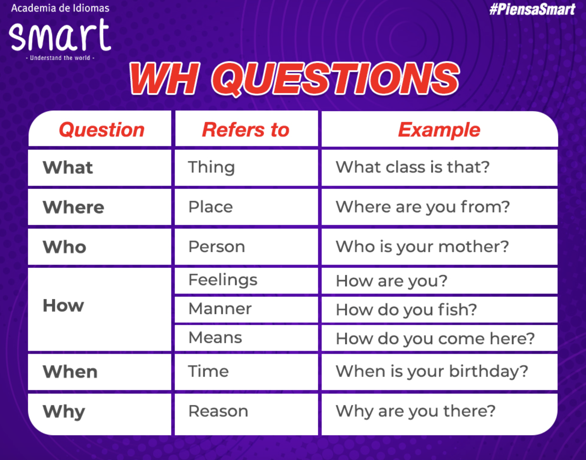

A1
Greetings & farewells
Saying Hello
| Formal |
Informal |
| Good morning |
What´s up? |
| Good afternoon |
How's it going? |
| Good evening |
How are you doing |
| How about you? |
Hello/Hi |
Examples:
- Hello, I am Eddier
- Hi, nice to meet you Monica. I'm Eddier
- Good morning. How are you?
- Great. What about you?
- What's up, Monica?
- No bad. What about you? Who's it going?
Saying Goodbye
| Formal |
Informal |
| Have a great day |
Bye |
| Good bye |
Bye-bye |
| Good nigth |
See you! |
Examples:
- Have a great day, Monica
- Good bye. It was good to see you
- I'm going to bed now. Good night!
- Bye-bye, love! Sweet dreams.
Part 1
| image |
response |
| Hi. My name is Eddier. |
I am a Consultant |
| You are ... |
You are a student from Smart |
| He is Freddy. |
He is a fireman |
| She is Daniela. |
She is an engineer |
| We are Pedro, Juan and Carlos. |
We are doctors. |
Activity 1
| image |
response |
| I am a ... |
chef |
| You are a... |
cashier |
| He is a... |
truck driver |
| She is a |
police officer |
| We are... |
waiters |
| They are... |
farmers |
Activity 2
| image |
response |
| Who am I? |
A consultant |
| Who is he |
A student |
| Who is the person |
A fireman |
| Who is she |
An engineer |
| Who are you? |
Doctors |
| Who are we |
Soccer players |
| image |
response |
| Hi. My name is Eddier |
I am a consultant |
| You are a student |
You are a student for Smart |
| He is Freddy |
He is a fireman |
| She is Daniela |
She is an engineerr |
| We are Pedro, Juan and Carlos |
We are doctors |
| They are Mario and Camilo |
They are soccer players |
The Albhabet
| letter |
pronunciation |
Example |
| A |
ei |
as in Angel |
| B |
bi |
as in Boy |
| C |
si |
as in Cat |
| D |
di |
as in Dog |
| E |
i |
as in |
| F |
ef |
as in Family |
| G |
yi |
as in Goat |
| H |
eich |
as in House |
| I |
ai |
as in Ice cream |
| J |
yei |
as in Jam |
| K |
kei |
as in King |
| L |
el |
as in Lemon |
| M |
em |
as in Money |
| N |
en |
as in Notebook |
| O |
o |
as in Orange |
| P |
pi |
as in Potato |
| Q |
kiu |
as in Queen |
| R |
ar |
as in Rabbit |
| S |
es |
as in Start |
| T |
ti |
as in Tomato |
| U |
iu |
as in Uniform |
| V |
vi |
as in Violin |
| W |
do-bul-iu |
as in Women |
| X |
ex |
as in X-ray |
| Y |
uai |
as in Yogurt |
| Z |
dsi |
as in Zebra |
- emilee
- jayden
- catherin
- damian
- nicholas
- isabelle
-
zoey
-
chair
- eraser
- desk
- board
- scissors
- rulers
- book
- Pensicl
- clip
- folder
Hello and good morning, my name is Eddier Ocampo, I am from Colombia and I am a consultant for Red Hat company. My email is eddier.ocampo@gmail.com and my number is 3238015629
Numbers
| # |
|
Example |
| 0 |
zero |
Two times zero equals zero |
| 1 |
one |
There is one table |
| 2 |
two |
There are two kids |
| 3 |
three |
There are three apples |
| 4 |
four |
There are four cats |
| 5 |
five |
There are five pencils |
| 6 |
six |
There are six books |
| 7 |
seven |
There are seven hens |
| 8 |
eight |
There are eigth bananas |
| 9 |
nine |
There are nine chickens |
| 10 |
ten |
There are ten hamburgers |

Ask and tell
Pronouns
- I am from Colombia
- You are from Panamá
- He is from Cameroon
- She is from Autralia
- It is from England
- We are from Ireland
- They are from Brazil, United States, Mexico and United Kindom

Countries & Nationalities
| Country |
Nationality |
| Canada |
Canadians |
| Unites States |
Americans |
| Belize |
Belozean |
| Bahamas |
Bahamian |
| Jamaica |
Jamaicans |
| Trinidad and Tobago |
Trinidadian(s)and Tobagonian(s) |
| Guyana |
Guyanese |
| United Kingdom |
Britsh |
| Ireland |
Irish |
| Malta |
Maltese |
| Australia |
Autralian |
| New Zealand |
New Zealander |
Verb To be
- Personal Information
- Do NOT say "I to be"
- Am, Is (She, He, It) Are (You, We, They)
- A men, a woman or it (is)
- Positive S + TB + Compl
- Negative S + Am/Is/Are + Not + Compl
- Interrogative Am/Is/Are + S + Compl?
| Complet form |
short form |
| I am |
I'm |
| You are |
You're |
| She is |
She's |
| He is |
He's |
| It is |
It's |
| Question |
Answer |
| Is Shakira from Cameroon? |
No, she isn't. She is from Colombia |
| Is Donald Trump a businessman? |
Yes he is a businessman |
| Are The Beatles from England? |
Yes, they are. The Beatles are from england |
| Are Freddie Mercury and Bob Marley singers? |
Yes, they are. Freddie Mercury and Bob Marley are singers |
| Is Angelina Jolie a lawyer? |
No, she insn't. She is a famous actress |
| Is the Eifefel Tower from France? |
Yes, it is. It is from France |
| Is Tom Cruise from New Seeland? |
No, he ins´t. he is from the Unetid States |
Mark Zuckerberg is a media magnate. He is the co-founder of Facebook Inc. His middle name is Elliot. He isn’t from Ireland. He isn't 17 years old. He ’s a software developer. His career started in 2004. His wife is Priscilla Chan. His Facebook profile is https://www.facebook.com/zuck .
WH Questions

| Answer |
WQ |
| This is a desktop |
What is it? |
| This flag is from Colombia |
Where is this flag from? |
| Because he likes teaching other people |
Why is he a teacher? |
| He is short and funny |
What is he like? |
| My birthday is on 28 Abril |
When is your birthday? |
| He is a student |
Who is he? |
| WQ |
Answer |
| What time is it? |
It's five o'clock |
| Where do you live? |
I live in Guarne |
| Who do you live with? I live with my wife |
|
| How old are you? |
I am 42 years old |
| When is new year's eve? New Year's eve is on December 31 st. |
|
| Why are you sad? |
Because I failed Math |
| Which is your coat? My coat is the red one |
|
Good morning Sir. Passport, please
Here it is
Sorry, what's your Id numb